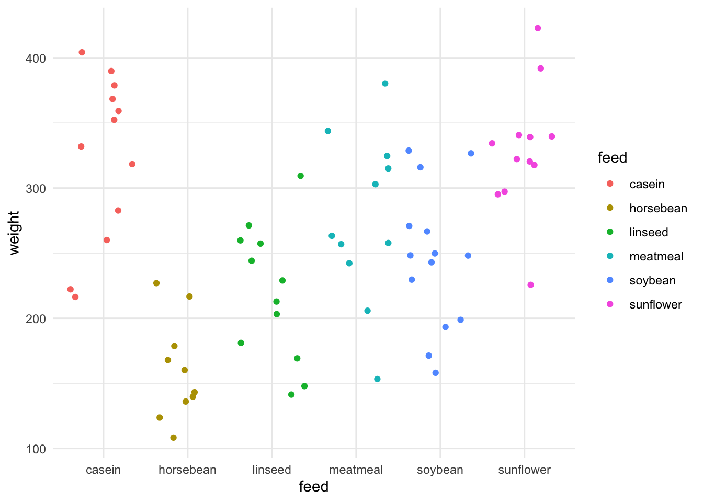

library(itssl)
df <- its_random_xy_time(20)
its_plot_xy_time(df, line = TRUE)
Sometimes we will want to use our existing data to build hypotheses to generate new ideas and experiments. The linear model can aid this by using it as a tool to predict what the model outputs would be given a particular set of inputs across the variables that we used to build our model. In this section we’ll take a look at doing things like predicting new data on our response (\(y\)-axis) given some \(x\) values.
The intuition behind this is more straightforward than you might initially think, consider the straight lines from our first section. We had a continuous \(x\) and \(y\) axis
library(itssl)
df <- its_random_xy_time(20)
its_plot_xy_time(df, line = TRUE)
We can peek into \(x\) to see what values we actually used
sort(df$x) [1] 5.824327 5.895516 7.105123 7.179086 7.375033 7.855269 7.912222
[8] 8.319600 8.729459 8.852362 9.532381 10.989182 11.510336 12.167571
[15] 12.329553 12.551050 12.883979 13.216811 13.431172 13.521335Although we don’t have a real \(x = 10\) in our data, imagine asking the question “what \(y\) would we get for \(x = 10\)?”. We can intuitively tell what the \(y\)-value would be simply by reading off the line at \(x = 10\), which is about 20 or from the formula, \(y = (1.9555 * 10) + 0.7780 = 20.33\). This is the intuition behind how a linear model prediction works with continuous \(x\) and \(y\) - we’re just reading off the line.
If we build the model, we can ask it to work this out for us directly using the predict() function. predict() takes the model and the new values to be predicted in a data.frame.
model <- lm(y ~ x, data = df)
predict(model, newdata = data.frame(x = c(10))) 1
20.33266 We see that we get the same value (given a little rounding error).
What happens when we give the predict() function a value we did have data for? Let’s pull out whatever the fifth value of our data was and look at that
df$x[5][1] 12.88398df$y[5][1] 24.32715This shows us that the \(x\) axis value of 12.88 had the corresponding \(y\) value of 24.33. Now let’s use the model to predict the \(y\) from the \(x\)
vals_to_predict <- data.frame(x = c(df$x[5]))
predict(model, newdata = vals_to_predict) 1
25.97217 The result from the model is quite different from the actual observed data value! This isn’t an error. Its because we’re asking the model to predict using the ‘line’ it came up with. Note that this is because the prediction comes from the model which takes into account the whole data. This is the process of ‘best fitting’ which ensures the ‘line’ matches all the points as well as possible, but doesn’t guarantee matching any particular point well.
It is possible to over-complicate models to make them fit all the points by allowing them to take extra parameters and become curves. Adding complexity in this way usually leads to bad models that only fit one particular data set well and is called ‘overfitting’.
If you are going to predict a value, you might want instead an interval in which that prediction might lie with certain amount of certainty. Like a confidence interval for the position of the mean in a sample, a prediction interval is a range that we are most certain a prediction will land in. This interval takes in the range of spread in the data we build the linear model with and turns it into something useless. Once the model is built, it’s easy to use the predict() function to get the prediction interval
vals_to_predict <- data.frame( x = c(10) )
predict(model, newdata = vals_to_predict, interval = "predict") fit lwr upr
1 20.33266 17.52743 23.13788we can see the predicted value and the lower and upper bounds of the prediction interval.
In the same way we looked at the line to get an intuitive understanding of how the linear model makes predictions, we can look at the groups in a categorical variable to see how \(y\) values are predicted from factors.
Consider the chickwts data.
its_plot_chickwts_time()
We can see that in this data set there is a single categorical variable called feed which is the type of food the chick was raised on, and the resulting continuous output variable of weight. If we model that and do a prediction we can get an intuition on what the prediction() means for each category.
model <- lm(weight ~ feed, data = chickwts)
predict(model,newdata = data.frame(feed = c("casein"))) 1
323.5833 predict(model,newdata = data.frame(feed = c("sunflower"))) 1
328.9167 Note that this time we have to use the a level of a factor, because that was the only term in this model. It doesn’t make sense to give it a number. The model returns the fitted value of weight for the level of the factor.
Do the numbers returned remind you of anything? Aren’t they awfully close to where we expect the mean of each group to be. Let’s check that out by doing a prediction for each feed and comparing with the group mean.
#first get a vector of the chickwts feed names
feeds <- sort(unique(chickwts$feed))
#do the prediction
preds <- predict(model,newdata = data.frame(feed = feeds) )
#add the names for clarity
names(preds) <- feeds
preds casein horsebean linseed meatmeal soybean sunflower
323.5833 160.2000 218.7500 276.9091 246.4286 328.9167 Now calculating the mean from the data.
library(dplyr)
group_by(chickwts, feed) %>%
summarize(mean = mean(weight)) # A tibble: 6 × 2
feed mean
<fct> <dbl>
1 casein 324.
2 horsebean 160.
3 linseed 219.
4 meatmeal 277.
5 soybean 246.
6 sunflower 329.Yep, they’re the same. This gives us the intuition that for the model of categoric data the prediction for each group in the category is the centre of it. It may not always be the exact mean, but it’s a useful way of thinking about it.
A significant use of predictions is when we have a mixture of variables that we can’t easily just see the mean for and want to know what the model thinks of those. This is especially useful for hypothesis generation or finding out possible parameter ranges for new experiments. As the last thing we’ll do with predictions we’ll look at the txhousing data, a data set about housing in Texas. This data has a mixture of continuous and categoric variables. We’ll see that this it isn’t more complicated than prediction for a single variable but does give us a much more convenient and powerful way to predict an outcome from provided values.
First a quick look at txhousing (it lives in ggplot2)
library(ggplot2)
str(txhousing)tibble [8,602 × 9] (S3: tbl_df/tbl/data.frame)
$ city : chr [1:8602] "Abilene" "Abilene" "Abilene" "Abilene" ...
$ year : int [1:8602] 2000 2000 2000 2000 2000 2000 2000 2000 2000 2000 ...
$ month : int [1:8602] 1 2 3 4 5 6 7 8 9 10 ...
$ sales : num [1:8602] 72 98 130 98 141 156 152 131 104 101 ...
$ volume : num [1:8602] 5380000 6505000 9285000 9730000 10590000 ...
$ median : num [1:8602] 71400 58700 58100 68600 67300 66900 73500 75000 64500 59300 ...
$ listings : num [1:8602] 701 746 784 785 794 780 742 765 771 764 ...
$ inventory: num [1:8602] 6.3 6.6 6.8 6.9 6.8 6.6 6.2 6.4 6.5 6.6 ...
$ date : num [1:8602] 2000 2000 2000 2000 2000 ...Now let’s build a linear model of property sale price predicted by the city it is in and the year and month of sale.
model <- lm(median ~ city + year + month, data = txhousing)And finally get a prediction for a particular case.
predict(model, newdata = data.frame(city = c("Abilene"), year = c(2000), month = c(2))) 1
65392.3 This shows how the linear model can be used to make predictions and hypothesis for further work.